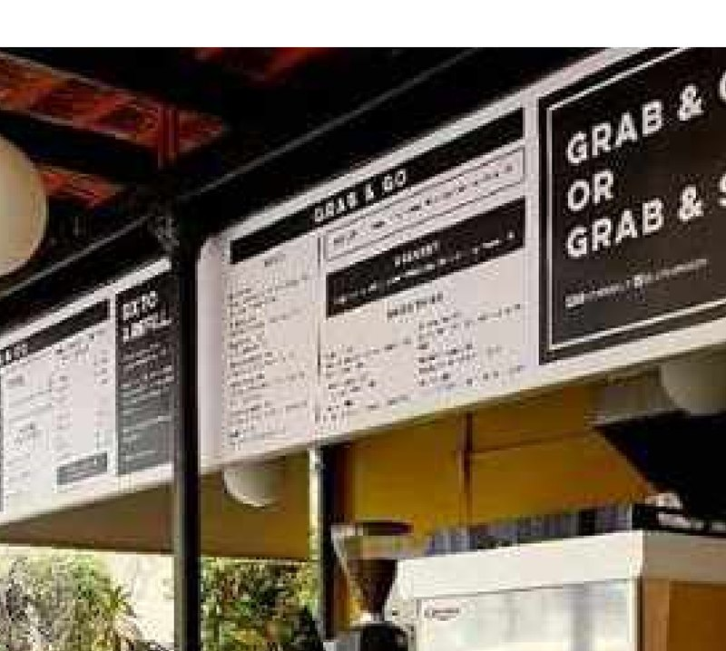
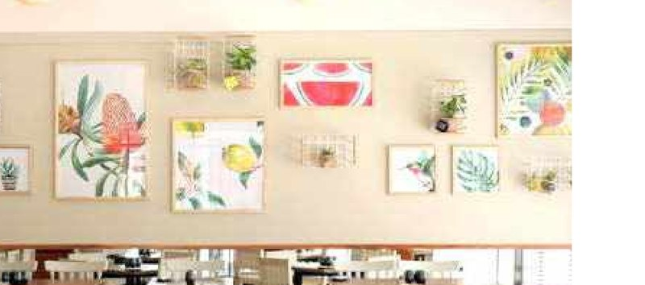

A full retrofit of Olive Bistro & Bar into Olly, a café designed to work equally well for people dining and people working. The brief called for a space that could hold a relaxed lunch crowd through the day and quietly double as an informal workspace — inspired by Australian café culture, where the counter and the coffee are as central to the room as the seating.
A grab-and-go counter anchors the entrance for quick visits, while a wall-art seating area at the back gives longer-stay guests and remote workers a calmer, more settled corner of the café. Materials and finishes were kept warm and unfussy, so the space reads as comfortable rather than corporate.

